WWDC 2022: Swift Playgrounds
Find hereafter a detailed summary of two videos that belong to a taxonomy of some WWDC footages.
The original videos are available on the official Apple website (session 110348, session 110349).
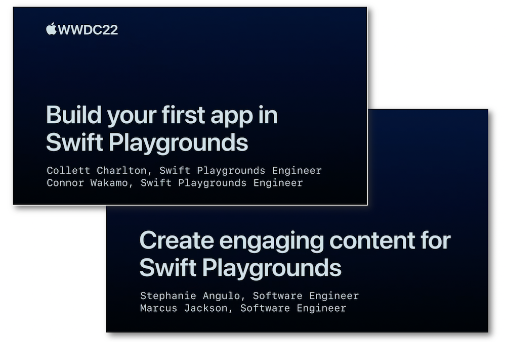
"Learn how you can easily prototype and build apps with Swift Playgrounds. We'll show you how to create an app from a blank project, build its interface with SwiftUI, and use Swift Package Manager to add extra functionality from an open source package. We'll also explore how you can debug issues using Previews and the console and take you through submitting an app to App Store Connect for distribution via TestFlight."
"Learn how you can build guided instructional content designed for Swift Playgrounds. Follow along with us as we explore how you can add a guide to a completed sample code project. We'll demonstrate how to add tasks to your learning center to show off relevant code and optional experiment tasks that encourage learners to extend the project with code of their own."
The structure of this speech is divided into two main parts and its subject matter deals with Swift Playgrounds 4 that introduced app development on iPad and Mac:
-
Create an app from scratch including:
-
Using the library and code completion.
-
Sharing a project via an
iCloudfolder. -
Using the view previews and the console for debugging.
-
Submitting an app to
TestFlight.
-
-
Build a guided instructional content by highlighting the new content features.
Most of the illustrations are parts of the Apple presentations and may be available at the Resources section inside the Overview sheet of each video.
Hereafter, the underlined elements lead directly to the playback of the WWDC video at the appropriate moment.
App from scratch #
Inserting elements may be done from the Library window...
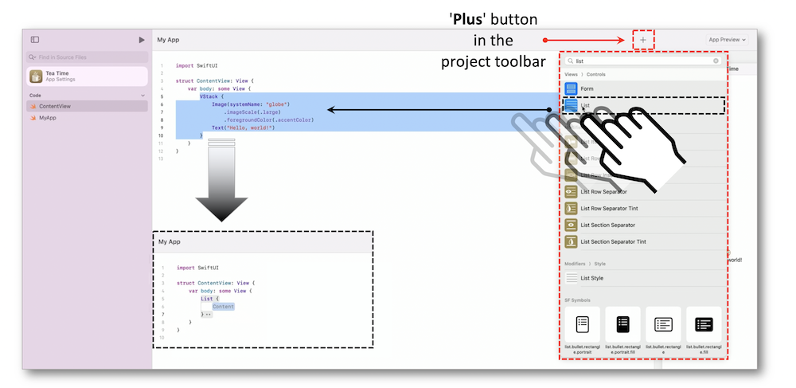
... that suggests a variety of snippets for Views, Modifiers, SF Symbols, and Colors.
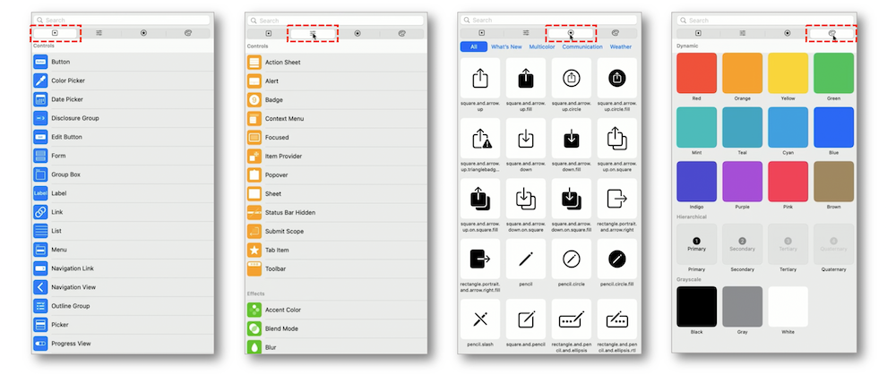
Worthwhile handlings are also outlined to ease the code implementation:
-
Add various view previews through the app preview.
-
Insert items in an array using a dedicated gesture.
-
Show up a message at the bottom left of the source editor as an appropriate solution for debugging.
Finally, besides the useful way to share a project through a shared iCloud folder, submitting directly to TestFlight from within Swift Playgrounds becomes as easy as pie.
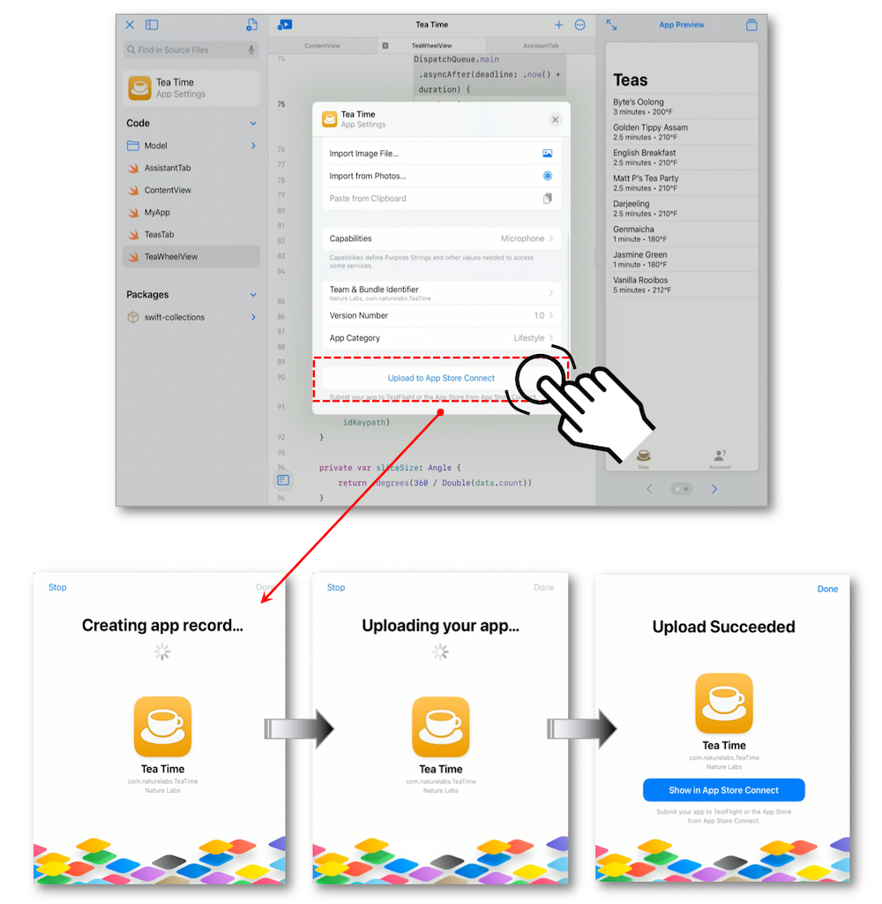
Guided instructional content #
This section introduces many ways to create captivating content with Swift Playgrounds 4 through an app whose features must be showed up and explained to the users thanks to the brand new instructional system.
This attractive educational experience is graphically based on few sections that each have their own purpose.
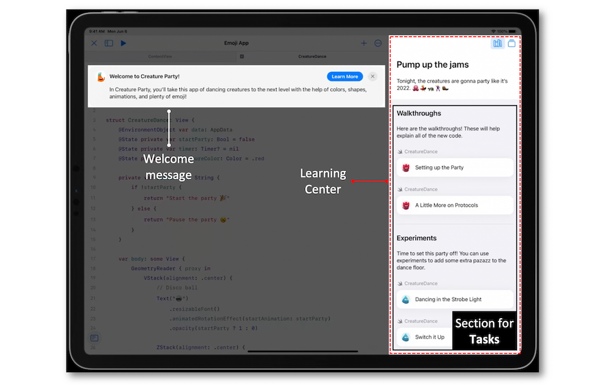
The guide module #
To insert this instructional system, it's mandatory to modify the file structure of the 'swiftpm' project that originally holds the source code at its root by:
-
Creating an App module in which all the project's source code and assets must be located while leaving the Package.swift file at the root of the project.
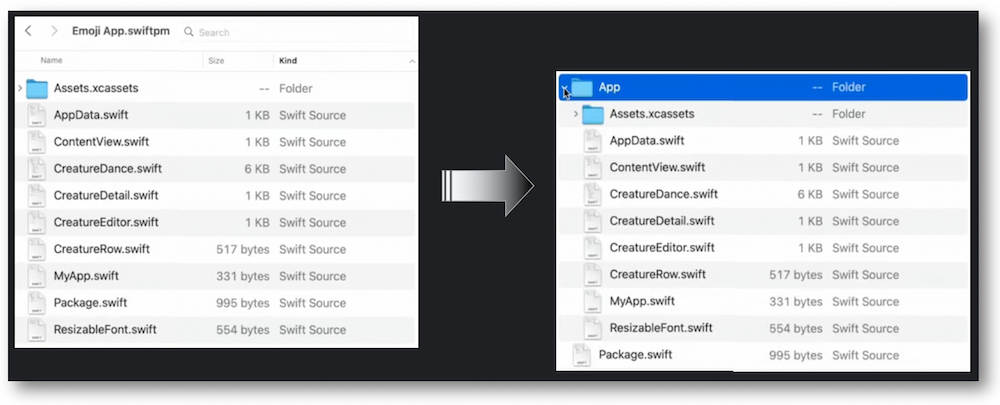 -
Creating a guide module inside which a guide file must ne stored.

The guide file #
This file precisely defines the content through directives that may be seen as containers as well as graphic elements.
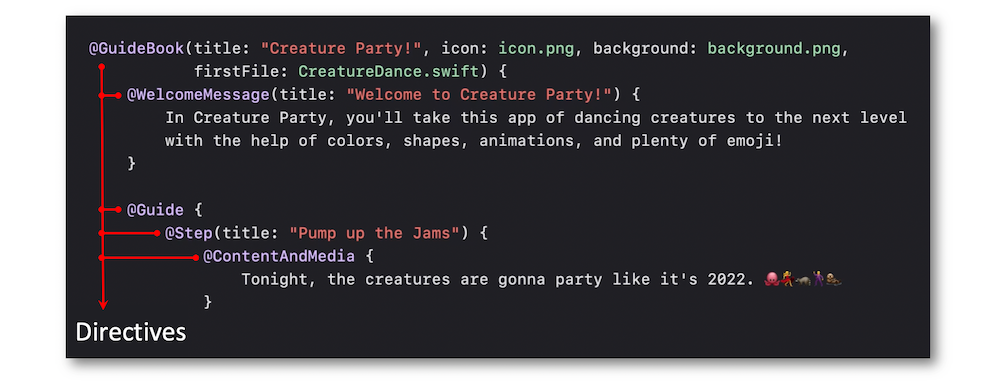
The directives #
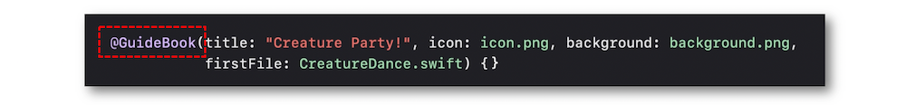
The first directive found in the guide file is the guidebook that represents the main container for all the upcoming directives.
Used to map out the content, this directive is mandatory to create tasks and it must be placed inside a container defined by the guide directive.
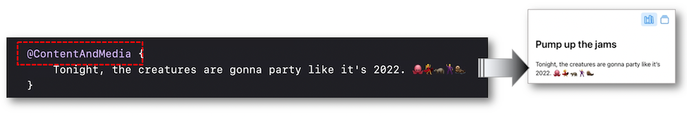
A task may be seen as a purpose to be reached by the user in the learning center.
It's displayed through a button whose complete implementation relies on the incoming parameters inside the task directive definition.
Moreover, according to the learning configuration, tasks can be gathered within a taskGroup directive for a better educational experience.
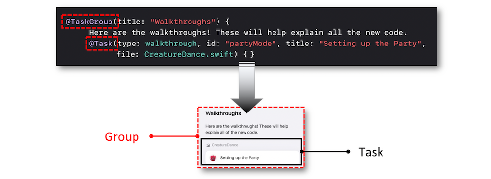
Kinds of tasks #
Tasks are of two types: walkthrough and experiment.
The walkthrough task is used all along this summary and then won't be described in further details inside this section.
Take a look at this complete demo of implementing such a task if need be.
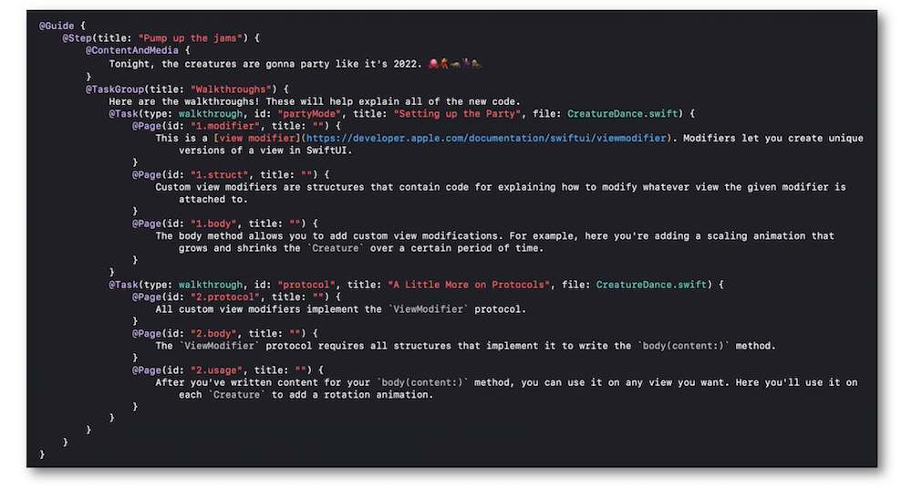
The experiment task is to let the users insert a different code than the original one in order to visualize the immediate visual result through the app.
Two incoming parameters are crucial to create an experiment task:
-
The type of the task in the definition of the
taskdirective. -
The permission of inserting some code directly into the source editor through the isAddable parameter in the definition of the
pagedirective.
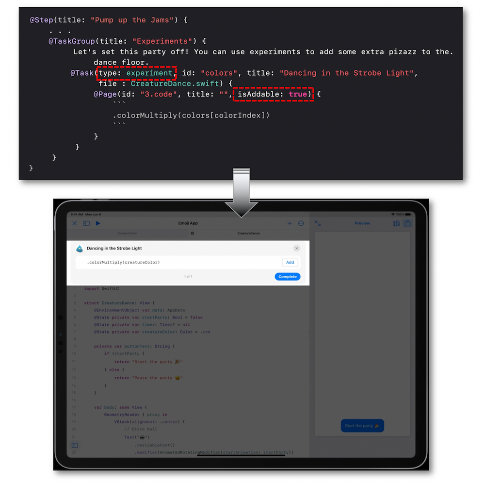
The code highlighting #
The way to reach this purpose for a walkthrough task relies on inserting two comment lines that are wrapped around the code to be highlighted.
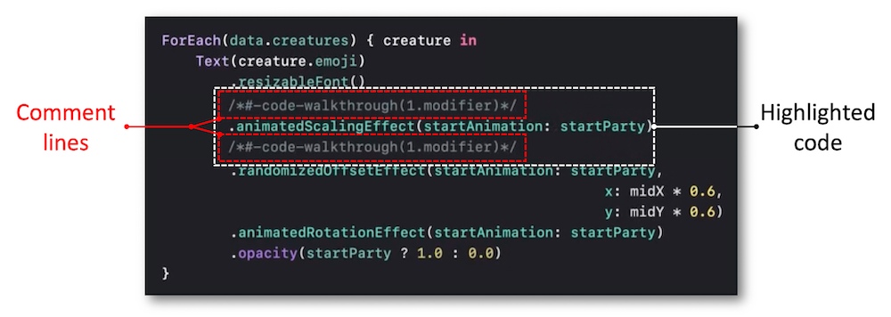
Regarding the experiment task, only one comment line is necessary to indicate the identifier of the experiment task to be tested out.
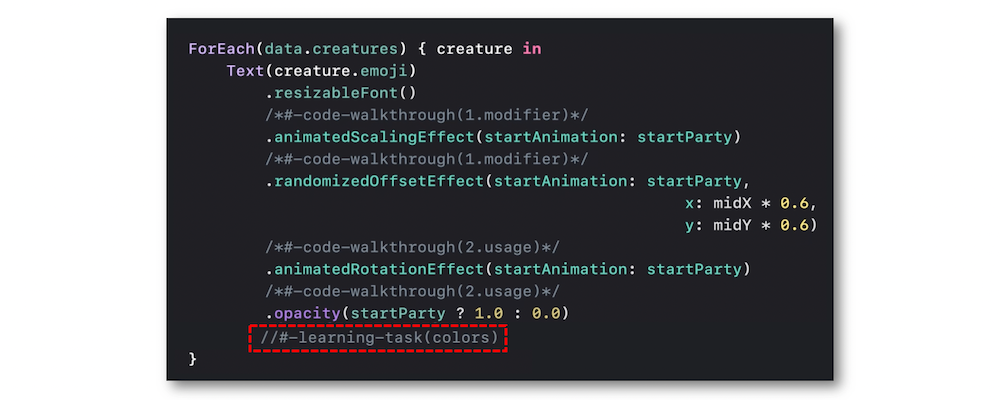